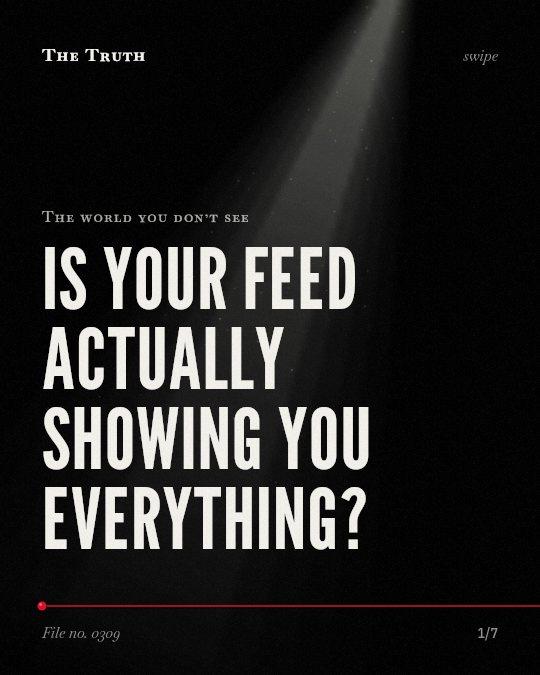

The world you don’t see
Is your feed actually showing you everything?

Algorithmic systems structurally amplify ideological homogeneity.
While some studies show personalization can match human editorial variety, internet customization effectively isolates individuals from diverse opinions.
Established. Several studies combined, or official data. The evidence is mixed.
What the research found
The study found no support for the filter-bubble hypothesis regarding the effect of personalization on the content and source diversity of Google News.
“we found no support for the filter-bubble hypothesis.”
Study, 2017. Haim et al., Digital Journalism.
All of the recommendation logics under study proved to lead to a rather diverse set of recommendations that are on par with human editors.
“We find that all of the recommendation logics under study proved to lead to a rather diverse set of recommendations that are on par with human editors”
Study, 2018. Möller et al., Information Communication & Society. This shows a link, not a cause.
Basing recommendations on user histories can substantially increase topic diversity within a recommendation set.
“basing recommendations on user histories can substantially increase topic diversity within a recommendation set.”
Study, 2018. Möller et al., Information Communication & Society.
Algorithmic systems structurally amplify ideological homogeneity, reinforcing selective exposure and limiting viewpoint diversity.
“algorithmic systems structurally amplify ideological homogeneity, reinforcing selective exposure and limiting viewpoint diversity”
Systematic review, 2025. Ahmmad et al., Societies.
Google News over-represents certain news outlets and under-represents other, highly frequented, news outlets.
“we did, however, find a general bias in that Google News over-represents certain news outlets and under-represents other, highly frequented, news outlets.”
Study, 2017. Haim et al., Digital Journalism.
Internet customization effectively isolates individuals from diverse opinions or materials, resulting in their exposure to only a select set of content.
“A filter bubble refers to the phenomenon where Internet customization effectively isolates individuals from diverse opinions or materials, resulting in their exposure to only a select set of content.”
Systematic review, 2023. Areeb et al., Wiley Interdisciplinary Reviews Data Mining and Knowledge Discovery.
The evidence on your news feed is mixed.
Some research shows personalization does not reduce news diversity. Other studies show systems reinforce selective exposure and limit your viewpoint diversity.
Your information diet is shaped by invisible logic.
That may be why you see a select set of content. The systems are designed to reinforce what you already see.
This part is our reading of the evidence, not a finding.
You scroll through your feed on a quiet evening.
The headlines match your previous interests. The stories feel familiar. You do not see the news from the other side of the street.
The honest summary
The evidence is mixed, with some studies confirming the existence of filter bubbles and others finding that the effects on news diversity may be exaggerated or manageable.
The evidence base suffers from geographic bias toward Western contexts, limited longitudinal research, and methodological fragmentation.
Who is choosing what you see?
Sources
- Qazi Mohammad Areeb, Mohammad Nadeem, Shahab Saquib Sohail et al. (2023). Filter bubbles in recommender systems: Fact or fallacy—A systematic review. Wiley Interdisciplinary Reviews Data Mining and Knowledge Discovery. Systematic review, cited 167 times.
- Mario Haim, Andreas Graefe, Hans‐Bernd Brosius (2017). Burst of the Filter Bubble? Effects of personalization on the diversity of Google News. Digital Journalism. Study, cited 614 times.
- Mukhtar Ahmmad, Khurram Shahzad, Abid Iqbal et al. (2025). Trap of Social Media Algorithms: A Systematic Review of Research on Filter Bubbles, Echo Chambers, and Their Impact on Youth. Societies. Systematic review, cited 115 times.
- Judith E. Möller, Damian Trilling, Natali Helberger et al. (2018). Do not blame it on the algorithm: an empirical assessment of multiple recommender systems and their impact on content diversity. Information Communication & Society. Study, cited 482 times.
Also read for this file, not quoted
This file was researched and drafted by software, then checked by rules a model cannot talk its way around: each quote above was matched word for word against the paper, and every number had to appear in it. How files are made.